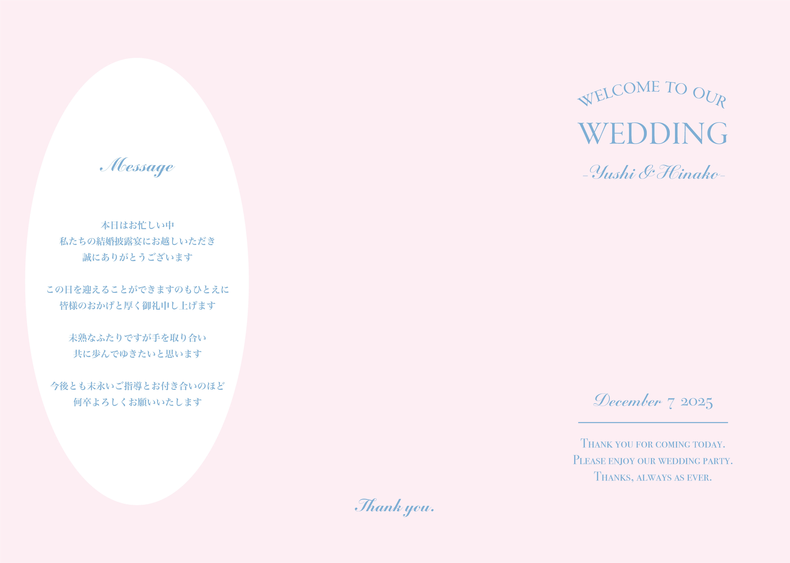

プロフィールブック1
メッセージページ

Overview
- 課題制作 制作全般
- 制作時期：2025年
- 使用ツール：Illustrator
Concept
来場者へのメッセージを主役にした、落ち着いたウェディングページです。 結婚式当日の空気感を大切にし、感謝の気持ちを静かに伝えるページとして制作しました。 余白を広く取り、文字量を抑えることで、言葉一つ一つが丁寧に届く構成にしています。 装飾を最小限に抑え、色味と書体でシンプルながらも、式全体の世界観を崩さないデザインを意識しました。